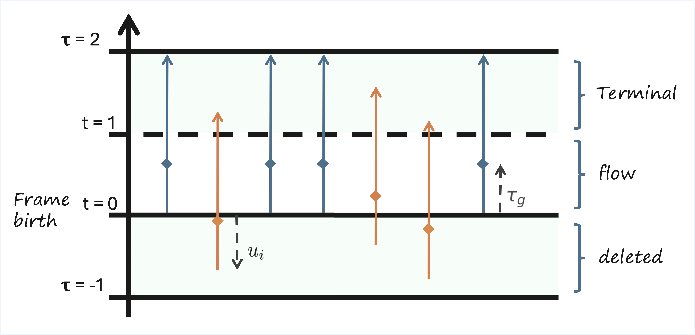

We present Flowception, a novel non-autoregressive and variable-length video generation framework. Flowception learns a probability path that interleaves discrete frame insertions with continuous frame denoising. Compared to autoregressive methods, Flowception alleviates error accumulation/drift as the frame insertion mechanism during sampling serves as an efficient compression mechanism to handle long-term context. Compared to full-sequence flows, our method reduces FLOPs for training three-fold, while also being more amenable to local attention variants, and allowing to learn the length of videos jointly with their content. Quantitative experimental results show improved FVD and VBench metrics over autoregressive and full-sequence baselines, which is further validated with qualitative results. Finally, by learning to insert and denoise frames in a sequence, Flowception seamlessly integrates different tasks such as image-to-video generation and video interpolation.

Figure 2: Illustration of the extended time scheduler for Flowception training. In Flowception, each frame has its own denoising time which depends on its insertion time. The global extended time $\tau_g$ progresses from 0 to 2, where insertion of new frames only occurs when $\tau_g < 1$. Starting frames (in blue) are instantiated at $\tau_g = 0$, while other frames (in orange) are inserted later and thus have a delay.

Figure 3: Flowception sampling starts from a small number of frames. Each step interleaves velocity updates (denoising) and predicted frame insertions. We illustrate the noise level of each frame by the lightness of its color.

Starting from a small set of frames, Flowception learns to flow existing frames while potentially inserting new frames anywhere in the sequence. Since the latest insertion happens at \( \tau_g = 1 \), the maximum number of steps is capped to \( \frac{2}{h} \) where \( h \) is the sampling step size.
During training, frames are deleted with uniform probability in \([-1,0]\), and each existing frame predicts the missing number of frames in the gap with its successor. The missing number of frames is directly related to the insertion rate, hence the probability of insertion during each step in the sampling process.


Flowception seamlessly unifies multiple modalities by introducing context frames (i.e., clean frames that are part of the visible sequence, which can potentially induce insertions). By providing a set of context frames, the model is able to learn how many new frames to insert in order to generate a coherent video.

Flowception is able to learn a valid distribution over video lengths. The model can be trained with a mix of short and long videos and generalize during sampling such that the video length is induced from its content. We verify this in a toy example where training videos only have lengths 15, 20, 25, or 30 frames, then plot the histogram of both ground truth and generated video lengths.
Examples of video interpolation and image-to-video generation across different datasets.


@misc{ifriqi2025flowceptiontemporallyexpansiveflow,
title={Flowception: Temporally Expansive Flow Matching for Video Generation},
author={Tariq Berrada Ifriqi and John Nguyen and Karteek Alahari and Jakob Verbeek and Ricky T. Q. Chen},
year={2025},
eprint={2512.11438},
archivePrefix={arXiv},
primaryClass={cs.CV},
url={https://arxiv.org/abs/2512.11438}
}